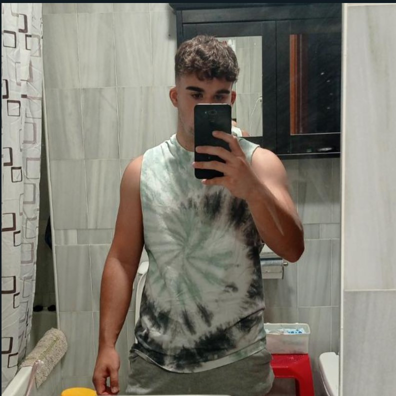

<ion-content Color="dark">
  <ion-grid>
  <ion-card color="dark">
    <ion-card-header>
      
      <ion-card-title>Alberto Parra Toval</ion-card-title>
      <ion-card-subtitle>Proyecto Ionic de la asignatura de ADD/HLC</ion-card-subtitle>
    </ion-card-header>
  
    <ion-card-content>
      <ion-text >
        <h2>Introducción</h2>
      </ion-text>
      <ion-text>
        A la hora de plantearme realizar la actividad de ionic que el profesor nos planteó, quise hacer una App que siempre he querido tener. Como fan de la F1 desde chiquitito pues me hubiese gustado que en una App pudieses editar los pilotos y ponerlos en diferentes equipos a los que están en la realidad.
      </ion-text>
    </ion-card-content>

    <ion-card-content>
      <ion-text >
        <h2>¿Cómo funciona esta App?</h2>
      </ion-text>
      <ion-text >
        Esta App se encuentra dividida en 3 páginas, la 1º {{'Pilotos' | uppercase}} donde se recogerá una lista de pilotos pudiendo insertar, modificar y borrar a nuestro antojo, una 2 página de {{'Equipos'| uppercase}} donde se recogerá tambien otra lista donde se modificará, insertará y borrará los datos de la misma.

        Por otro lado habrá una 3º página que se centrará en enlazar las dos anteriores pero siguiendo la misma funcionalidad, es decir, borrar, modificar e insertar. 
      </ion-text>
    </ion-card-content>
  </ion-card>
</ion-grid>
</ion-content>